Prático quando você precisa.
Confortável o tempo todo.
BB663 | até 22Kg
FECHAMENTO MAIS COMPACTO E COM APENAS UMA MÃO.
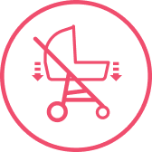
MÚLTIPLAS POSIÇÕES DE RECLINE + ASSENTO AJUSTÁVEL EM 3 OPÇÕES
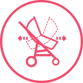
ASSENTO REVERSÍVEL E 2 EM 1
CAPOTA AMPLA, RETRÁTIL COM QUEBRA-SOL
Projetado para acompanhar do nascimento aos 22 kg no carrinho e até 13 kg no bebê conforto. Use por muito mais tempo, com a tranquilidade do conjunto feito para durar.
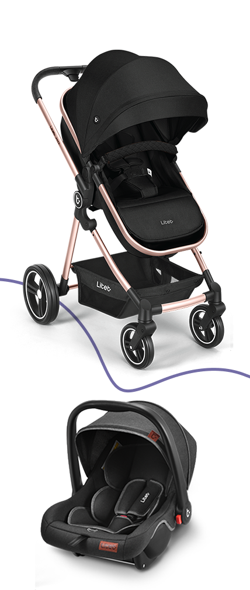
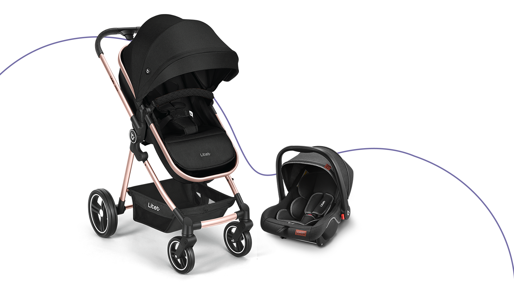
Você fecha com uma mão, o assento dobra ao meio e o carrinho reduz o tamanho de forma surpreendente. Mais fácil de guardar em casa ou colocar no porta-malas. Leveza pra você, sem abrir mão do conforto do seu bebê.
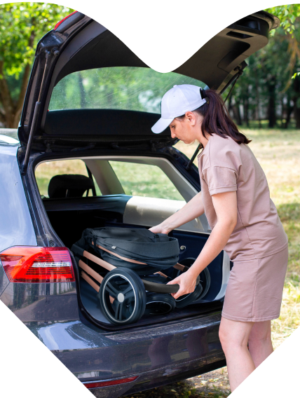
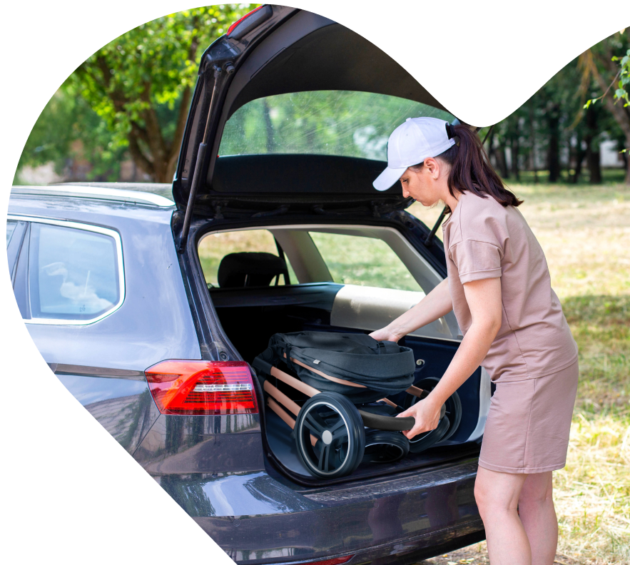
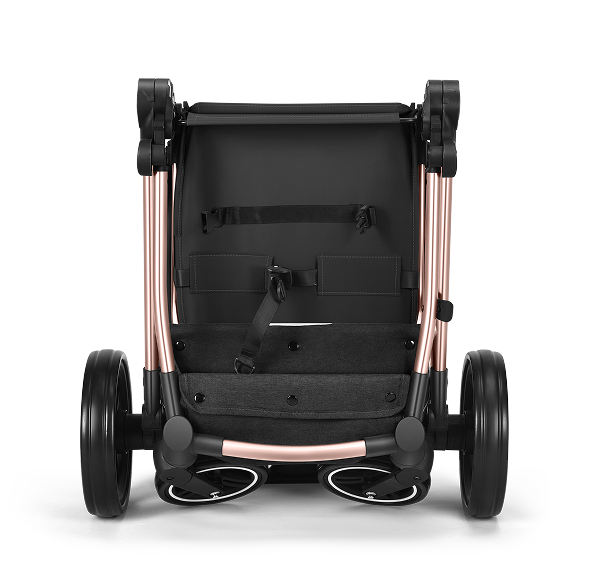
Múltiplas posições de recline e 3 ajustes do assento para garantir um passeio agradável, em todos os momentos.
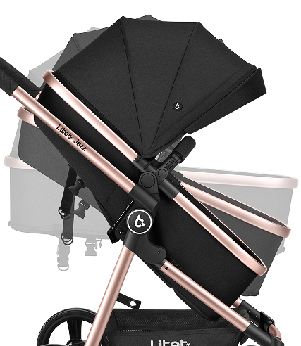
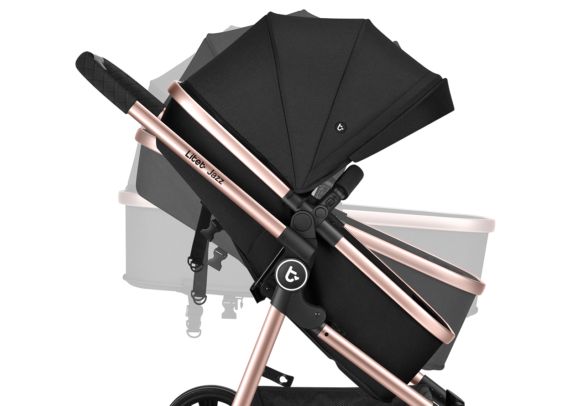
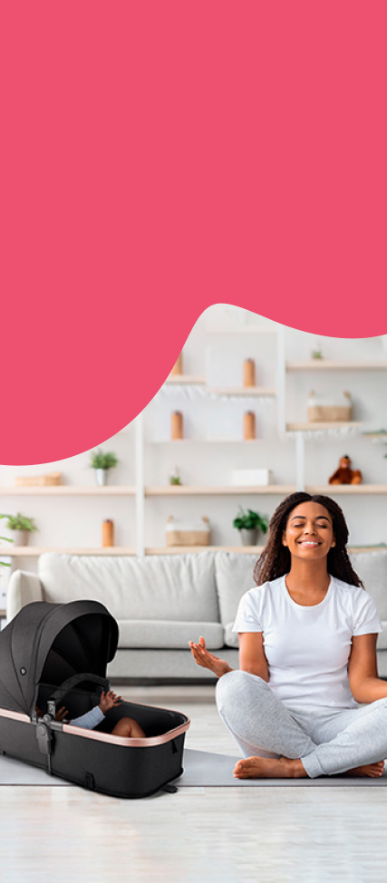
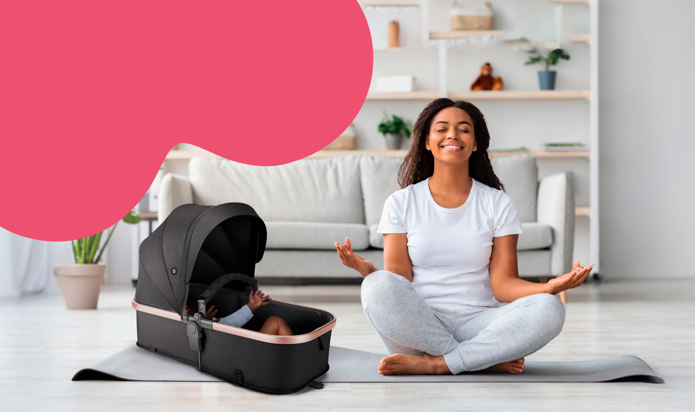
Reversível e 2 em 1, o assento se adapta às suas escolhas e se transforma em moisés, podendo ser usado acoplado ao carrinho ou de forma independente. Cuidado desde os primeiros dias.
A capota ampla e retrátil, com quebra-sol e proteção solar 40, oferece mais proteção e bem-estar. Perfeita para todas as estações do ano.
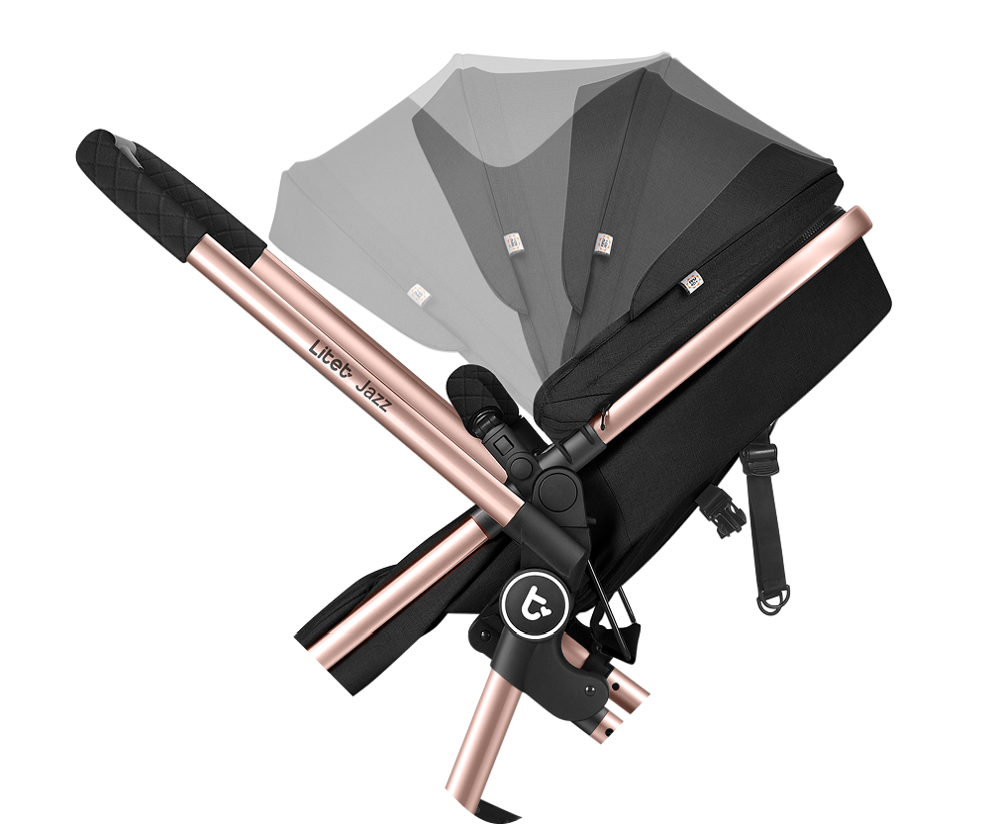
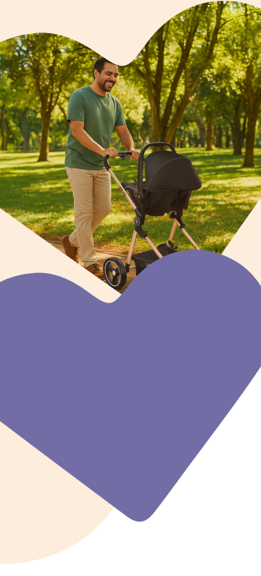
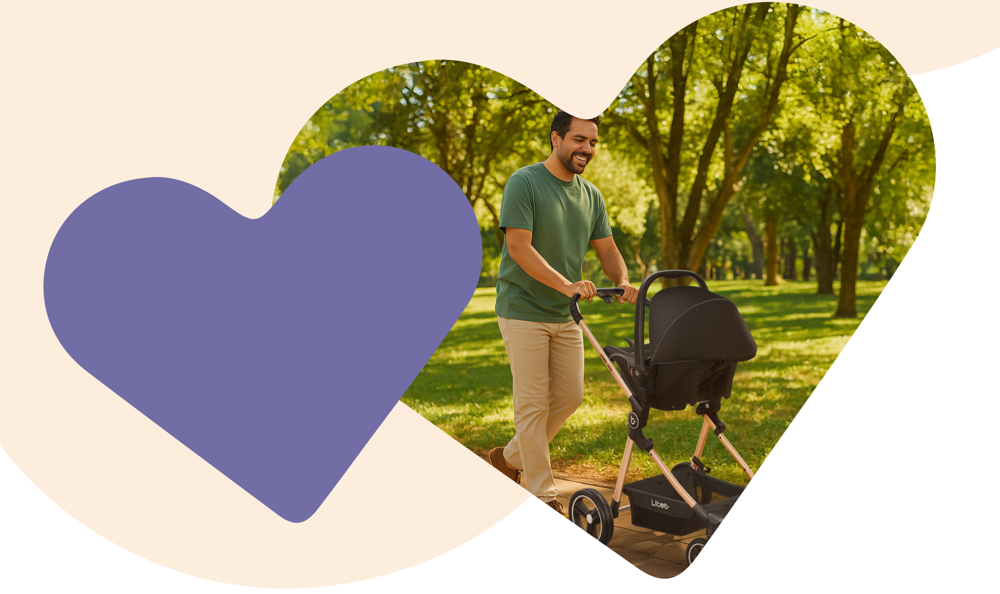
Sistema completo com bebê conforto e adaptadores incluídos, permitindo uma transição mais suave do carro para o passeio. Mais economia e mais praticidade em um só produto.
Rodas robustas com suspensão nas dianteiras e sistema giratório, além de freio conjugado.
Mais segurança e controle em todos os passeios.
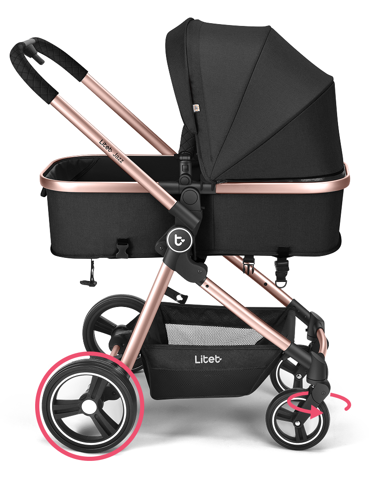
Cesto grande para guardar tudo
que você precisa.
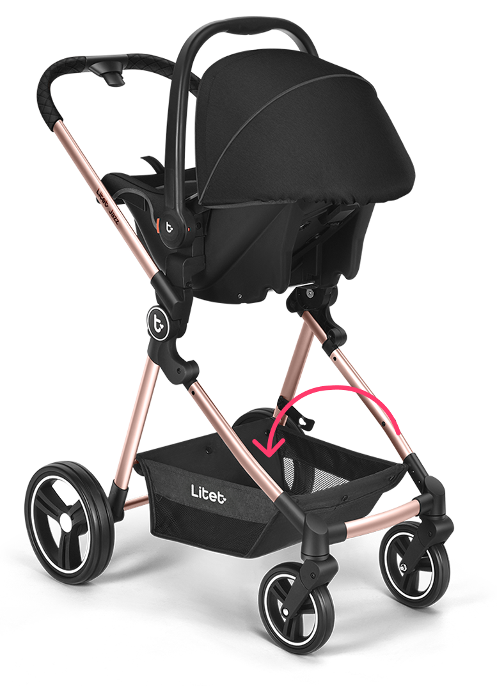
Assento amplo, com almofadas entrepernas e de ombros. Manopla e barra frontal em corino com uma estrutura leve. Uma experiência acolhedora para seu bebê e prática para quem empurra.
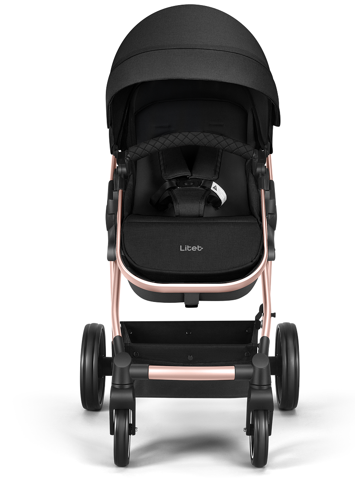
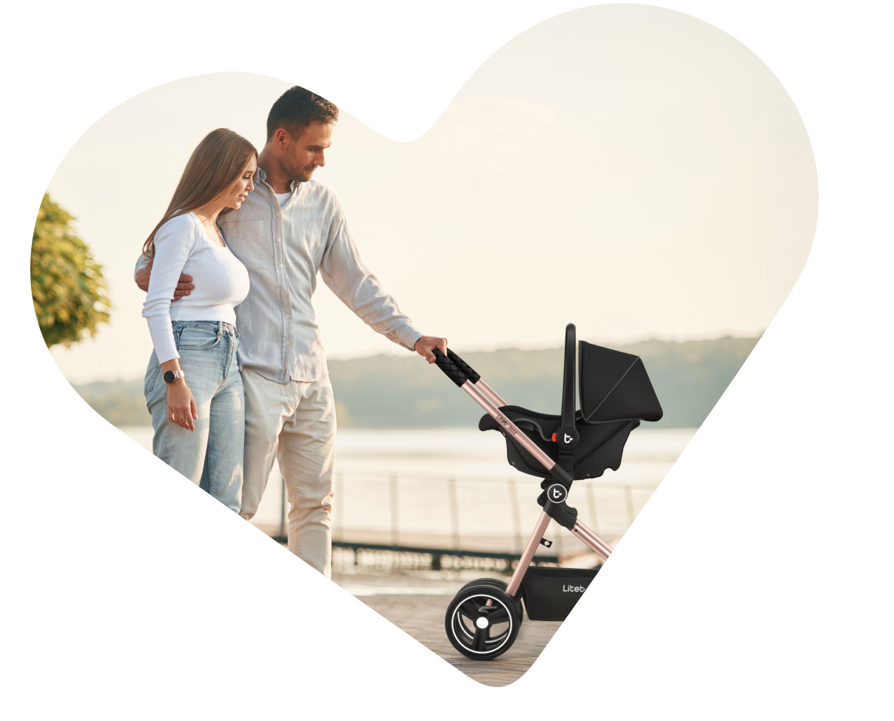
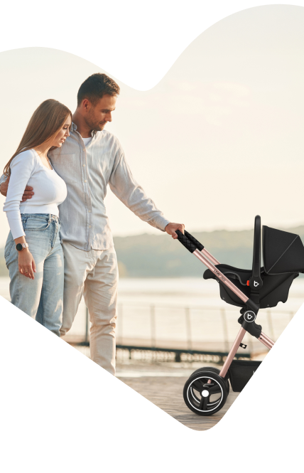
Marca: Litet
Cor: preta e prata
Recomendado: carrinho: 0 m a 22 kg
bebê conforto: Grupo 0+ (0 a 13 kg)
Peso: 9,8 kg
Dimensões do produto: 103 x 89 x 60 cm
Composição: estrutura: alumínio;
tecido: poliéster; partes plásticas: PP;
rodas: EVA; revestimento: poliéster; espuma: PU.
Conteúdo da embalagem: 1 carrinho, 1 bebê
conforto, 1 par de adaptadores de bebê conforto
e 1 manual de instruções.